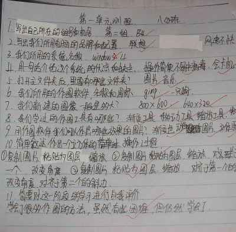

2011-2012 第二学期八年级图像处理教学设计
作者：TeliuTe 来源：基础教程网
十四、第一单元测验 返回目录 下一课
（一）教学设计
1、学习目标：停电复习
2、注意事项：
3、教学过程：
1）教师准备学案和板书；
2）学生整队进入，开机抄黑板上笔记；
3）教师讲解板书演示操作；
4）学生打指法、日志、完成操作；
5）教师打勾记录学生指法成绩，检查日志和操作；
注：学生抄完笔记就开始打指法、日志，老师讲完后再继续完成；
（二）板书设计(学生笔记)
操作图示：

（三）课后记
早上停电，到班里去上课
本想着让别的老师上，可是平时一直都不给
--
本来准备学习缩放图像和画布大小
重新想了下，改成单元测验好了
--
跟预料的相同，学生根本不习惯上文化课
要求了一下，另一个班赶跑一个
--
真正做起来就好了，就是开头和结尾
要么是不想学想玩，要么就是想着早早下课
--
整体来看操作的知识还都有印象，
可是名词概念就不行，平时根本不注意这些
--
自己根据学习过程，出一些简单的题目
要是外面的题可能又是另一种状况，学的不考考的没学
--
需要的是等级还是能力呢，怎样考才能体现知识技能
或者说分数能完全代表能力吗，还是为了分数而学习
--
如果不是为了分数，那么这个学习是为了什么呢
将来太遥远了不现实，对当前有什么用呢
--
第一单元测验 班级______ 姓名___________
1、写出自己所在的组号和机号。
2、写出我们所用电脑的品牌和配置(1～2条)。
3、写出我们所用系统的名称。
4、用一句话介绍这个系统的优点和缺点。
5、打开主文件夹后，里面有哪些文件夹(2上以上)。
6、我们所用的作图软件的名称和图标是什么？
7、我们新建的图像一般是多大？
8、我们学过的作图工具有哪些(3个以上)。
9、用作图软件我们可以作出哪些效果的图片？
10、简单叙述作出一个立方体的操作过程。
11、简要对这一阶段的学习进行自我评价。
返回目录 下一课
本教程由86团学校TeliuTe制作|著作权所有
基础教程网：http://teliute.org/
美丽的校园……
转载和引用本站内容，请保留版权信息和本站链接。